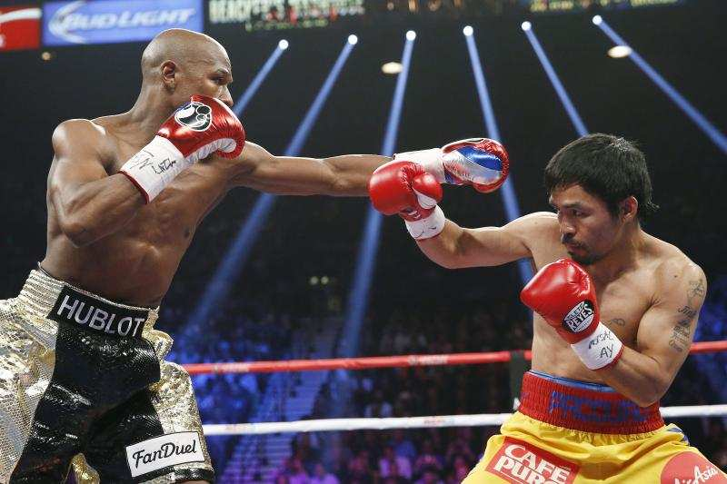
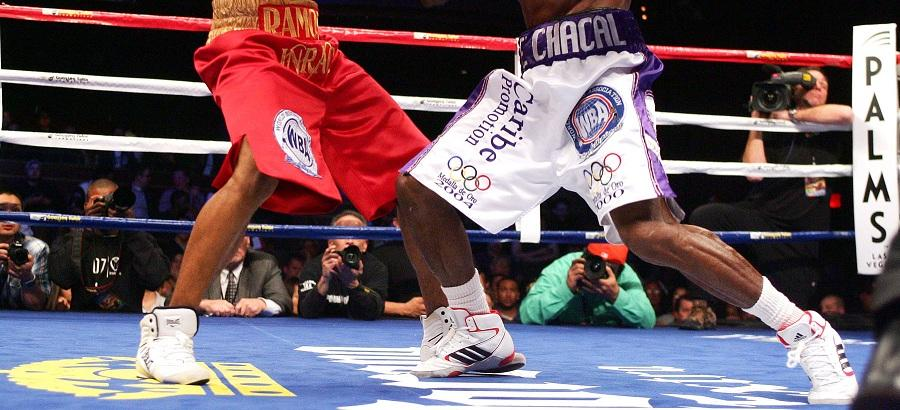
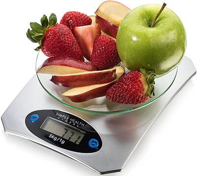

Jab
The jab is the most important part of your offense. It is important to establish and measure your distance when throwing punches. It is very easy to combo off of this punch which helps create an offensive rhythm to carry for the rest of the round. Unfortunately, a lot of fighters forget to keep their right hand up to their chin when they jab and they fail to bring the hand that punches quickly back to their face. A great way to fix this problem is to practice jabbing in front of a mirror to make sure you consistently keep your right hand up and you bring your jabbing hand back to your face.
Footwork
At the amateur level in NYC footwork is a severely underated aspect of boxing. Fighters do not understand how effective proper footwork can be for you for your offensive and defensive abilities. A good way to improve your footwork is to watch a lot of videos from professional fighters and slow them down. When you slow the video down, you're able to take notes on what the fighter is able to accomplish when he moves his feet in the right way. They are able to generate more offense by creating different angles to attack from.
Weight Cutting
Making weight to fight in an advantageous weight class is the main goal for a boxer. There are many ways to make weight but not many do it in a safe manner. Many boxers today try to cut water weight when they are more than 10 pounds away from the desired weight. This is an extremely unhealthy practice because repeated attempts can have a severe impact on your long term health. Many fighters have suffered damaged kidneys and other organs due to excessive water weight cutting.A great way to counter this practice is to create a very dilligent and dedicated schedule that keeps you within 10 pounds of your goal weight through consistent check ups and healthy foods